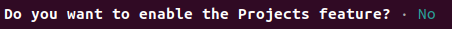

Communiceren met de Raspberry Pi.
In dit hoofdstuk leer je hoe je de Raspberry Pi kan gebruiken. Het moet een verbinding met het Internet hebben, zodat je nieuwe programma's kan downloaden. Je kan met de Raspberry Pi praten met een USB-toetsenbord en een monitor met een HDMI-aansluiting, bijvoorbeeld een TV. Maar je kan ook praten met de Raspberry Pi via je laptop.
Inhoud.
Wat heb je nodig.
Om een Raspberry Pi te gebruiken, heb je het volgende nodig:
- Een Raspberry Pi 4B computer met het besturingssysteem Raspberry Pi OS Lite (64-bit).
- Een klaargemaakt micro SD-kaartje voor de Raspberry Pi, dit is in het vorige hoofdstuk besproken.
- Een adapter om stroom aan de Raspberry Pi te geven.
Wat ga je doen.
Stap 1: Stop het SD-kaartje in de Raspberry Pi.
Stap 2: Sluit de adapter aan op de Raspberry Pi, zodat hij stroom krijgt.
Stap 3: Gebruik een andere computer om verbinding te maken met de Raspberry Pi via SSH.
Stap 1: Stop het SD-kaartje in de Raspberry Pi.

Om een micro SD-kaartje te gebruiken in een Raspberry Pi 4B, volg je deze stappen:
| Stap | Actie |
|---|---|
| 1 | Zoek de SD-kaartlezer op de Raspberry Pi. Dit is een kleine rechthoekige opening links in het midden van de Raspberry Pi. |
| 2 | Neem het micro SD-kaartje en kijk naar beide kanten. Er zal op één kant tekst staan. |
| 3 | Houd het kaartje met de kant met de tekst naar beneden gericht en stop het in de SD-kaartlezer. |
| 4 | Duw het kaartje zachtjes in de kaartlezer totdat het op zijn plaats zit. |
| 5 | Als je het kaartje wilt verwijderen, trek je het kaartje naar buiten. |
Stap 2 - Sluit de adapter aan op de Raspberry Pi, zodat hij stroom krijgt.
Om de Raspberry Pi 4B te laten werken, moet je eerst de stroomadapter aansluiten op de micro USB-C-aansluiting aan de linkerkant onderaan het bord. Vervolgens moet je de stekker van de adapter in het stopcontact steken.
Stap 3 - Gebruik een andere computer om verbinding te maken met de Raspberry Pi via SSH.
Om verbinding te maken met een Raspberry Pi vanuit een andere computer met SSH, heb je eerst een aantal dingen nodig:
De Raspberry Pi moet aan het stroomnetwerk zijn aangesloten en aan staan.
Je moet weten wat het IP-adres is van de Raspberry Pi. Dit is een uniek nummer dat aan elke computer en elk apparaat op het internet of wifi is toegewezen.
Je moet ook weten wat het gebruikersnaam en wachtwoord zijn voor de Raspberry Pi. In het vorige hoofdstuk heb je 'pi' als gebruikersnaam opgegeven met als wachtwoord dat je opgeschreven hebt tijdens het maken van het micro SD kaartje.
Je moet op de andere computer een programma hebben geïnstalleerd dat SSH ondersteunt, zoals PuTTY (voor Windows) of Terminal (voor MacOS en Linux).
Gebruik de volgende stappen volgen om een verbinding te maken met de Raspberry Pi vanuit een andere computer.
| Stap | Actie |
|---|---|
| 1 | Open met Ctrl + Alt + T een terminal sessie voor de Mac of de laptop die je bij de CoderDojo wordt gebruikt. |
| 2 | Voer het commando ssh pi@IP_adres_Raspberry_Pi in in het programma. Bijvoorbeeld ssh pi@192.168.2.15. |
| 3 | Typ: yes. $\\$ |
| 4 | Vul de naam en het wachtwoord in die je gebruikt voor je Raspberry Pi. Als alles goed is gegaan, dan moet je nu verbonden zijn met de Raspberry Pi vanaf een andere computer. Dan kan je opdrachten geven aan de Raspberry Pi en bestanden uitwisselen tussen de twee computers. |
| 5 | Als je windows gebruikt, dan moet je een programma genaamd Putty installeren. Met dat programma kan je een maken. |
| 5 | Als je een Chromebook hebt, kun je naar Linux gaan door op een speciaal symbool (>_) te klikken en dan te kiezen voor Penquin. $\\$ |
Samenvatting.
In dit hoofdstuk leer je hoe je een Raspberry Pi gebruikt, een kleine computer die verbinding moet maken met het internet. Je kunt met de Raspberry Pi praten via een USB-toetsenbord en een monitor, zoals een tv, of via een laptop. Om te beginnen, stop je een micro SD-kaartje in de Raspberry Pi en sluit je hem aan op een stroombron. Daarna kun je verbinding maken met de Raspberry Pi vanaf een andere computer, zoals een laptop, en ermee communiceren via een programma genaamd SSH. Dit stelt je in staat om opdrachten te geven aan de Raspberry Pi en bestanden uit te wisselen tussen de twee computers. Met deze stappen kun je de Raspberry Pi gebruiken voor verschillende projecten en leren over computers en programmeren.